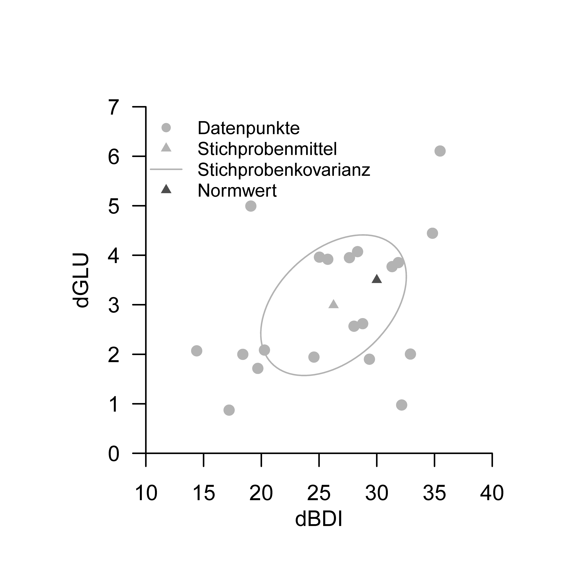
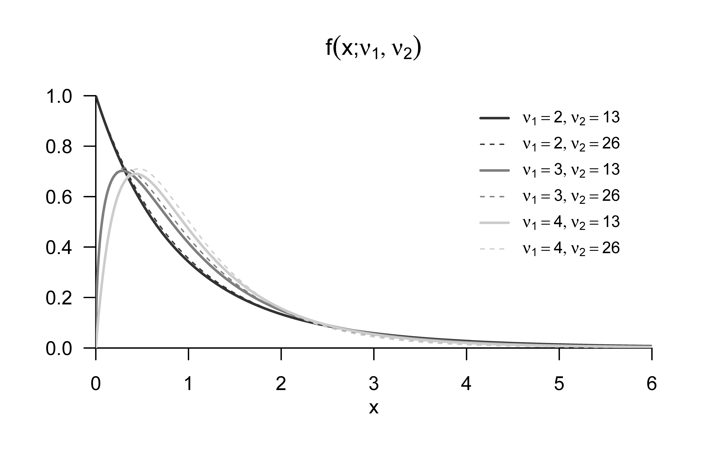
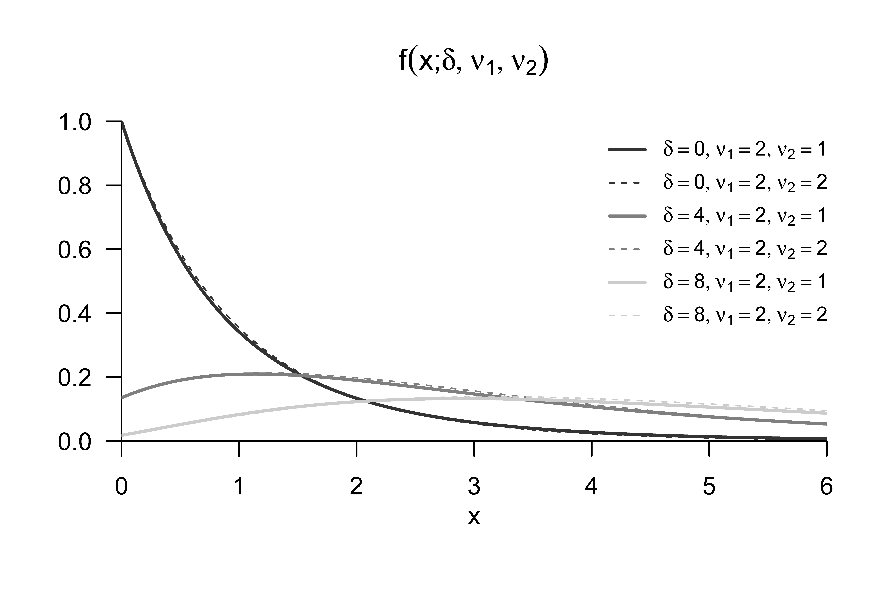
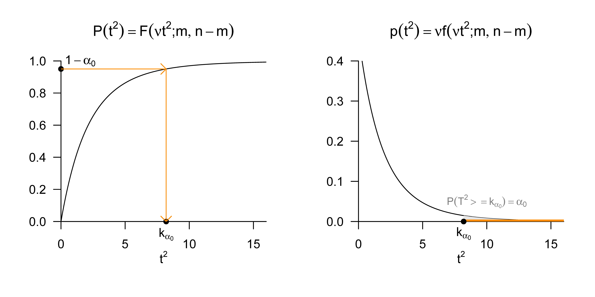
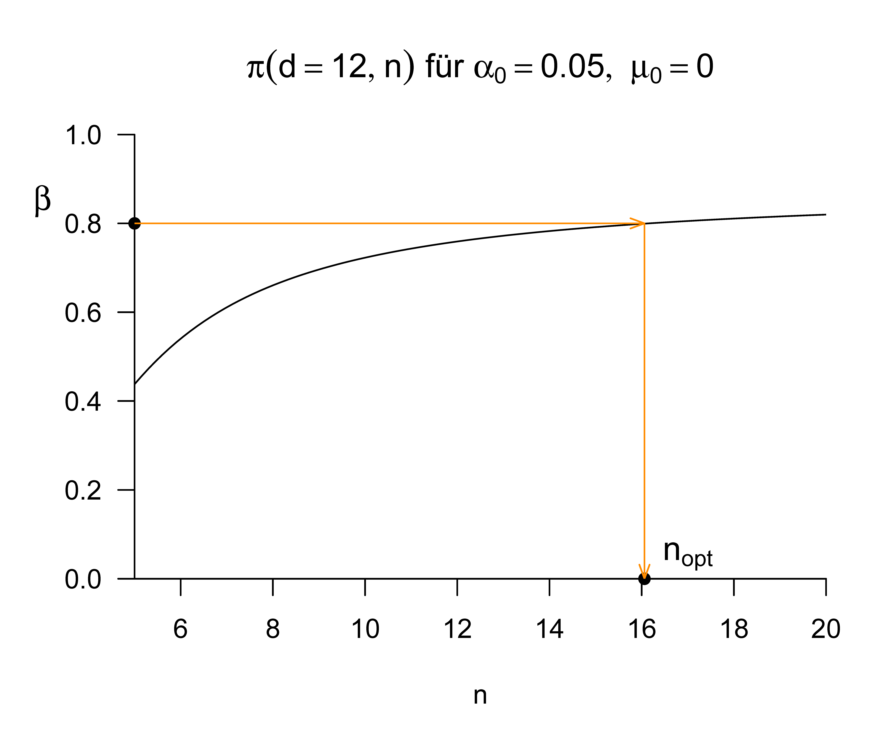

| dBDI | dGLU |
|---|---|
| 35 | 6.1 |
| 25 | 4.0 |
| 20 | 1.7 |
| 29 | 2.6 |
| 29 | 1.9 |
| 17 | 0.9 |
| 33 | 2.0 |
| 28 | 4.1 |
| 26 | 3.9 |
| 31 | 3.8 |
| 14 | 2.1 |
| 18 | 2.0 |
| 19 | 5.0 |
| 28 | 2.6 |
| 20 | 2.1 |
| 35 | 4.4 |
| 28 | 4.0 |
| 32 | 3.9 |
| 32 | 1.0 |
| 25 | 1.9 |
37 Einstichproben-T\(^2\)-Tests
37.1 Anwendungsszenario
Wie im univariaten Fall ist das Anwendungsszenario eines Einstichproben-T\(^2\)-Tests dadurch gekennzeichnet, dass \(n\) Datenpunkte einer Stichprobe (Gruppe) randomisierter experimenteller Einheiten betrachtet werden. In Generalisierung des univariaten Falls sind die \(n\) Datenpunkte allerdings multivariat, jeder Datenpunkt besteht also aus zwei oder mehr Zahlen und kann als Vektor in \(\mathbb{R}^m\) mit \(m>1\) betrachtet werden. In Analogie zum univariaten Fall wird von den \(n\) Datenpunkten angenommen, dass sie Realisierungen von \(n\) unabhängigen und identisch multivariat normalverteilten Zufallsvektoren sind. Hinsichtlich der identischen multivariaten Normalverteilung \(N(\mu,\Sigma)\) dieser Zufallsvektoren wird angenommen, dass sowohl der wahre Erwartungswertparameter \(\mu\) als auch der wahre Kovarianzmatrixparameter \(\Sigma\) unbekannt sind. Schließlich wird voraussgesetzt, dass ein Interesse an einem inferentiellen Vergleich des wahren, aber unbekannten, Erwartungswertparameters \(\mu\) mit einem vorgegebenen Wert \(\mu_0\), beispielsweise \(\mu_0 := 0_m\), besteht. Wie im univariaten Fall ergeben sich auch in diesem Anwendungsszenario eine Reihe möglicher Hypothesenszenarien mit jeweils unterschiedlichen Testgütefunktionen und damit Herangehensweisen an Testumfangkontrolle und Stichprobengrößenoptimierung. Wir wollen im Rahmen dieser Einführung nur das Szenario einer einfachen Nullhypothese und einer zusammengesetzten Alternativhypothese, \[ H_0 :\mu = \mu_0 \Leftrightarrow \Theta_0 := \{\mu_0\} \mbox{ und } H_1 : \mu \neq \mu_0 \Leftrightarrow \Theta_1 := \mathbb{R}^m \setminus \{\mu_0\} \tag{37.1}\] genauer untersuchen.
Anwendungsbeispiel
Für ein konkretes Anwendungsbeispiel betrachten wir die Analyse simulierter
Prä-Post-Interventions-Differenzwerte von BDI Scores (dBDI) und Glukokortikoidplasmaleveln (dGLU), die, wie in Tabelle 38.1 dargestellt, an einer Gruppe von \(n = 20\) Patient:innen erhoben worden sein könnten. Positive Werte von dBDI und dGLU entsprächen dabei einer Reduktion der Depressionssymptomatik, negative Werte zeigen eine Verschlechterung des Depressionszustandes an.
Bei der Anwendung eines Einstichproben-T\(^2\)-Tests auf die Daten dieses simulierten Datensatzes nehmen wir an, dass die zweidimensionalen Datenvektoren (dBDI, dGLU) Realisierungen von \(n = 20\) unabhängig normalverteilten zweidimensionalen Zufallsvektoren \(\upsilon_i \sim N(\mu,\Sigma)\) sind. Wir nehmen weiterhin an, dass wir daran interessiert sind, unsere Unsicherheit beim inferentiellen Vergleich des wahren, aber unbekannten, Erwartungswertparameters \(\mu \in \mathbb{R}^2\) mit einem Vergleichswert \(\mu_0 \in \mathbb{R}^2\), etwa einem Therapieerfolgsnormwert, zu quantifizieren.
Unabhängig von diesem inferenzstatistischen Vorgehen betrachten wir zunächst zu diesem Datensatz einige Deskriptivstatistiken wie durch folgenden R Code ausgewertet und in Abbildung 37.1 dargestellt. Verglichen mit einem Therapienormwert von \(\mu_0 := (30,3.5)^T\) fallen die Komponenten des Stichprobenmittels mit \(\bar{\upsilon} = (26.3, 3.0)^T\) etwas geringer aus, allerdings bei einer nicht zu vernachlässigen Datenvariabilität, die sich in einer Mahalanobisdistanz von \(D = 0.4\) des Stichprobenmittels vom Therapienormwert in bezug auf die Stichprobenkovarianzmatrix des Datensatzes wiederspiegelt.
# Datendeskription
D = read.csv("_data/502-einstichproben-t2-tests.csv") # Daten einlesen
Y = rbind(D$y_1i, D$y_2i) # Datenmatrix
mu_0 = matrix(c(30,3.5), nrow = 2) # Normwert
n = ncol(Y) # Anzahl Datenpunkte
j_n = matrix(rep(1,n), nrow = n) # 1_n
I_n = diag(n) # I_n
J_n = matrix(rep(1,n^2), nrow = n) # 1_{nn}
Y_bar = (1/n)*(Y %*% j_n) # Stichprobenmittel
C = (1/(n-1))*(Y %*% (I_n-(1/n)*J_n) %*% t(Y)) # Stichprobenkovarianzmatrix
D = t(Y_bar - mu_0) %*% solve(C) %*% (Y_bar - mu_0) # Mahalanobis DistanzY_bar = 26.25615 2.991039
D = 0.3773184

dBDI, dGLU Daten des Beispieldatensatzes. Jeder Punkt visualisiert die Daten einer Patient:in, die Stichprobenkovarianz ist durch die 0.4 Isokontur einer zweidimensionalen Normalverteilung mit Erwartungswertparameter und Kovarianzmatrixparameter entsPrächend dem Stichprobenmittel und der Stichprobenkovarianz dargestellt
37.2 Modellformulierung und Modellevaluation
Wir definieren zunächst das Einstichproben-T\(^2\)-Test-Modell wie folgt.
Definition 37.1 (Einstichproben-T\(^2\)-Test-Modell) Für \(i = 1,...,n\) seien \(\upsilon_i\) \(m\)-dimensionale Zufallsvektoren, die die \(n\) Datenpunkte eines Einstichproben-T\(^2\)-Test Szenarios modellieren. Dann hat das Einstichproben-T\(^2\)-Test-Modell die strukturelle Form \[ \upsilon_i = \mu + \varepsilon_i \mbox{ mit } \varepsilon_i \sim N(0_m, \Sigma) \mbox{ u.i.v. für } i = 1,...,n \mbox{ mit } \mu \in \mathbb{R}^m, \Sigma \in \mathbb{R}^{m \times m} \mbox{ pd} \tag{37.2}\] und die Datenverteilungsform \[\begin{equation} \upsilon_i \sim N(\mu, \Sigma) \mbox{ u.i.v. für } i = 1,...,n \mbox{ mit } \mu \in \mathbb{R}^m, \Sigma \in \mathbb{R}^{m \times m} \mbox{ pd}. \end{equation}\]
Die Äquivalenz von struktureller Form und Datenverteilungsform des Einstichproben-T\(^2\)-Test-Modells folgt dabei direkt mit Theorem 20.4 durch Transformation der Zufallsvektoren \(\varepsilon_i\) anhand von Gleichung 37.2.
37.3 Modellevaluation
Teststatistik und Test
Wir definieren als nächstes eine Teststatistik für das Einstichproben-T\(^2\)-Test Szenario.
Definition 37.2 (Einstichproben-T\(^2\)-Teststatistik) Gegeben seien das Einstichproben-T\(^2\)-Test-Modell und ein Nullhypothesenparameter \(\mu_0 \in \mathbb{R}^m\). Dann ist die Einstichproben-T\(^2\)-Teststatistik definiert als \[\begin{equation} T^2 := n(\bar{\upsilon} - \mu_0)^T C^{-1}(\bar{\upsilon} - \mu_0), \end{equation}\] wobei \(\bar{\upsilon}\) und \(C\) das Stichprobenmittel und die Stichprobenkovarianzmatrix der \(\upsilon_1,...,\upsilon_n\) bezeichnen.
Die Einstichproben-T\(^2\)-Teststatistik ist offenbar die mit dem Stichprobenumfang \(n\) skalierte Mahalanobis-Distanz von \(\bar{\upsilon}\) und \(\mu_0\) hinsichtlich \(C\) (vgl. Kapitel 36.2). Damit gilt entsprechend, dass bei konstanter Stichprobenkovarianzmatrix die Einstichproben-T\(^2\)-Test Teststatistik \(T^2\) größere Werte für eine größere Euklidische Distanz von \(\bar{\upsilon}\) und \(\mu_0\) annimmt und bei konstanter Euklidischer Distanz von \(\bar{\upsilon}\) und \(\mu_0\) der Wert der Teststatistik \(T^2\) von der Höhe der Datenvariabilität abhängt. Hinsichtlich der Verteilung der Einstichproben-T\(^2\)-Teststatistik halten wir zunächst folgendes Theorem fest, das wir nicht beweisen wollen.
Theorem 37.1 (Verteilung der skalierten Einstichproben-T\(^2\)-Teststatistik) Es seien \(\upsilon_1,...,\upsilon_n \sim N(\mu,\Sigma)\) mit \(\mu \in \mathbb{R}^m\) und \(\Sigma \in \mathbb{R}^{m\times m} \mbox{pd}\), \[ \nu:= \frac{n-m}{(n-1)m} \tag{37.3}\] und für \(\mu \in \mathbb{R}^m\) sei die Einstichproben-T\(^2\)-Teststatistik definiert als \[\begin{equation} T^2 := n(\bar{\upsilon} - \mu_0)^T C^{-1} (\bar{\upsilon} - \mu_0). \end{equation}\] Dann gilt \[ \nu T^2 \sim f(\delta, m, n-m), \tag{37.4}\] wobei \(f(\delta,m,n-m)\) die nichtzentrale \(f\)-Verteilung mit Nichtzentralitätsparameter \[ \delta := n(\mu - \mu_0)^T\Sigma^{-1}(\mu - \mu_0) \tag{37.5}\] sowie mit Freiheitsgradparametern \(m\) und \(n-m\) bezeichnet.
Für einen Beweis von Theorem 37.1 verweisen wir auf Hotelling (1931) und Anderson (2003). Wir erinnern in diesem Zusammenhang an die Begriffe der \(f\)-Zufallsvariable und der nichtzentralen \(f\)-Zufallsvariable, für die wir exemplarische WDFen in Abbildung 37.2 und Abbildung 37.3 darstellen.
Definition 37.3 (\(f\)-Zufallsvariable) \(\xi\) sei eine Zufallsvariable mit Ergebnisraum \(\mathbb{R}_{>0}\) und WDF \[\begin{equation} p_\xi : \mathbb{R} \to \mathbb{R}_{>0}, x \mapsto p_\xi(x) := \nu_1^{\frac{\nu_1}{2}}\nu_2^{\frac{\nu_2}{2}} \frac{\Gamma\left(\frac{\nu_1+\nu_2}{2}\right)}{\Gamma\left(\frac{\nu_1}{2}\right)\Gamma\left(\frac{\nu_2}{2}\right)} \frac{x^{\frac{\nu_1}{2}-1}}{\left(\nu_1 x + \nu_2 \right)^{\frac{\nu_1+\nu_2}{2}}}, \end{equation}\] wobei \(\Gamma\) die Gammafunktion bezeichne. Dann sagen wir, dass \(\xi\) einer \(f\)-Verteilung mit Freiheitsgradparametern \(\nu_1\) und \(\nu_2\) unterliegt und nennen \(\xi\) eine \(f\)-Zufallsvariable mit Freiheitsgradparametern \(\nu_1\) und \(\nu_2\). Wir kürzen dies mit \(\xi \sim f(\nu_1,\nu_2)\) ab. Die WDF einer \(f\)-Zufallsvariable bezeichnen wir mit \(f(x;\nu_1,\nu_2)\), die KVF einer \(f\)-Zufallsvariable bezeichnen wir mit \(F(x;\nu_1,\nu_2)\), und die inverse KVF einer \(f\)-Zufallsvariable bezeichnen wir mit \(F^{-1}(x;\nu_1,\nu_2)\).

Definition 37.4 (Nichtzentrale \(f\)-Zufallsvariable) \(\xi\) sei eine Zufallsvariable mit Ergebnisraum \(\mathbb{R}_{>0}\) und WDF \[\begin{multline} p_\xi : \mathbb{R} \to \mathbb{R}_{>0}, x \mapsto \\ p_\xi(x) := \sum_{k=0}^\infty \frac{e^{-\delta/2}(\delta/2)^k}{\frac{\Gamma(\nu_2/2)\Gamma(\nu_1/2 + k)}{\Gamma(\nu_2/2 + \nu_1/2 + k)}k!} \left(\frac{\nu_1}{\nu_2}\right)^{\nu_1/2 + k} \left(\frac{\nu_2}{\nu_2+\nu_1x}\right)^{(\nu_1+\nu_2)/2 + k} x^{\nu_1/2 - 1 + k} \end{multline}\] wobei \(\Gamma\) die Gammafunktion bezeichne. Dann sagen wir, dass \(\xi\) einer nichtzentralen \(f\)-Verteilung mit Nichtzentralitätsparameter \(\delta\) und Freiheitsgradparametern \(\nu_1\) und \(\nu_2\) unterliegt und nennen \(\xi\) eine nichtzentrale \(f\)-Zufallsvariable mit Nichtzentralitätsparameter \(\delta\) und Freiheitsgradparametern \(\nu_1\) und \(\nu_2\). Wir kürzen dies mit \(\xi \sim f(\delta,\nu_1,\nu_2)\) ab. Die WDF einer \(f\)-Zufallsvariable bezeichnen wir mit \(f(x;\delta,\nu_1,\nu_2)\), die KVF einer nichtzentralen \(f\)-Zufallsvariable bezeichnen wir mit \(F(x;\delta,\nu_1,\nu_2)\), und die inverse KVF einer nichtzentralen \(f\)-Zufallsvariable bezeichnen wir mit \(F^{-1}(x;\delta,\nu_1,\nu_2)\).

Im univariaten Fall sind bekanntlich die \(F\)-Statistiken der Varianzanalyse bei Zutreffen der Nullhypothese \(f\)-verteilt und bei Zutreffen der Alternativhypothese nichtzentral-\(f\)-verteilt. Für den Fall \(\mu = \mu_0\), dass also der wahre, aber unbekannte Erwartungswertparameter mit dem Nullhypothesenparameter identisch ist, gilt nach Gleichung 37.5 \(\delta = 0\) und \(f(\delta,m,n-m)\) entspricht der \(f\)-Verteilung \(f(m,n-m)\).
Wir halten weiterhin fest, dass aus Theorem 37.1 im univariaten Fall \(m := 1\) aus Gleichung 37.3 folgt, dass \[\begin{equation} \nu = \frac{n-1}{(n-1)\cdot 1} = 1 \end{equation}\] und mit der Stichprobenvarianz \(S^2\) einer univariaten Stichprobe entsPrächend folgt, dass \[\begin{equation} T^2 = n\frac{(\bar{\upsilon} - \mu_0)^2}{S^2} = \left(\sqrt{n}\frac{\bar{\upsilon} - \mu_0}{S} \right)^2. \end{equation}\] Dies ist offenbar das Quadrat der bekannten univariaten Einstichproben-T-Test Teststatistik. Damit ist nach Theorem 37.1 das Quadrat der univariaten Einstichproben-T-Test Teststatistik nach \(f(\delta,1,n-1)\) verteilt. Intuitiv und verkürzt ausgedrückt ist also eine quadrierte \(t\)-Zufallsvariable eine \(f\)-Zufallsvariable.
Aus Theorem 37.1 folgen nun für Einstichproben-T\(^2\)-Teststatistik unmittelbar folgende Formen für ihre WDF und KVF.
Theorem 37.2 (WDF und KDF der Einstichproben-T\(^2\)-Teststatistik) Im Einstichproben-T\(^2\)-Test Szenario sei \[\begin{equation} \nu:= \frac{n-m}{(n-1)m} \end{equation}\] Dann ist eine WDF der Einstichproben-T\(^2\)-Teststatistik gegeben durch \[\begin{equation}\label{eq:pT1} p_{T^2} : \mathbb{R}_{\ge 0} \to \mathbb{R}, t^2 \mapsto p_{T^2}(t^2) := \nu f(\nu t^2;\delta, m,n-m) \end{equation}\] und eine KVF der Einstichproben-T\(^2\)-Teststatistik ist gegeben durch \[\begin{equation}\label{eq:PT2} P_{T^2} : \mathbb{R}_{\ge 0} \to [0,1], t^2 \mapsto P_{T^2}(t^2) := F(\nu t^2;\delta, m,n-m) \end{equation}\]
Beweis. Wir halten zunächst fest, dass das Theorem zur univariaten WDF Transformation bei linear-affinen Abbildungen besagt, dass für eine Zufallsvariable \(\xi\) mit WDF \(p_\xi\) und der Definition \(\upsilon = f(\xi)\) mit \(f(\xi) := a\xi + b\) für \(a\neq 0\) eine WDF von \(\upsilon\) definiert ist durch \(p_\upsilon(y) := (1/|a|)p_\xi((y-b)/a)\). Im vorliegenden Fall ist \(\xi = \nu T^2\) mit WDF \(f(\delta,m,n-m)\) und \(\upsilon := T^2 = \frac{1}{\nu}\nu T^2\), also \(a = 1/\nu\) und \(b = 0\). Mit \(\nu > 0\) ergibt sich \(\eqref{eq:pT1}\) also aus \[\begin{equation} p_{T^2}(t^2) = \frac{1}{a}p_{\nu T^2}\left(\frac{t^2}{a}\right) = \nu f(\nu t^2; m, n-m). \end{equation}\] \(\eqref{eq:PT2}\) folgt dann damit, dass WDFen bei kontinuierlichen Zufallsvariablen die Ableitungen der entsprechenden KVFen sind. Mit der Kettenregel der Differentiation ergibt sich \[\begin{align} \begin{split} \frac{d}{dt^2}P_{T^2}\left(t^2\right) & = \frac{d}{dt^2}\left(F(\nu t^2;m,n-m,\delta)\right) \\ & = \frac{d}{dt^2}F(\nu t^2;m,n-m,\delta)\frac{d}{dt^2}\left(\nu t^2 \right) \\ & = \nu f(\nu t^2;m,n-m,\delta) \\ & = p_{T^2}(t^2). \end{split} \end{align}\]
Wir halten fest, dass die skalierte Einstichproben-T\(^2\)-Test Teststatitik \(\nu T^2\) nach \(f(\delta,m,n-m)\) nichtzentral \(f\)-verteilt ist, die WDF der Einstichproben-T\(^2\)-Test Teststatitik \(T^2\) selbst dagegen durch \(\nu f(\nu t^2;\delta, m,n-m)\) geben ist. Wir simulieren diese Verteilung mithilfe folgenden R Codes und visualisieren diese Simulation in Abbildung 37.4.
# Modellparameter
m = 2 # Dimensionalität der Zufallsvektoren/Daten
n = 15 # Anzahl der Datenpunkte
mu_0 = matrix(c(1,1) , nrow = 2) # Nullhypothesenparameter
mu = matrix(c(2,2) , nrow = 2) # wahrer, aber unbekannter, Erwartungswertparameter
Sigma = matrix(c(0.5,0.3, 0.3,0.5), nrow = 2, byrow = TRUE) # wahrer, aber unbekannter, Kovarianzmatrixparameter
# Simulation
library(MASS) # R Paket für multivariate Normalverteilungen
nsim = 1e4 # Anzahl Simulationen/Datensatzrealisierungen
Yb = matrix(rep(NaN,m*nsim), nrow = 2) # Stichprobenmittelarray
T2 = rep(NaN,nsim) # Einstichproben-T$^2$-Teststatistik Array
j_n = matrix(rep(1,n), nrow = n) # 1_n
I_n = diag(n) # I_n
J_n = matrix(rep(1,n^2), nrow = n) # 1_{nn}
for(s in 1:nsim){ # Simulationsiterationen
Y = t(mvrnorm(n,mu,Sigma)) # \upsilon_i \sim N(\mu,\Sigma), i = 1,...,n
Y_bar = (1/n)*(Y %*% j_n) # Stichprobenmittel
C = (1/(n-1))*(Y %*% (I_n-(1/n)*J_n) %*% t(Y)) # Stichprobenkovarianzmatrix
T2[s] = n*t(Y_bar - mu_0) %*% solve(C) %*% (Y_bar - mu_0) # Einstichproben-T$^2$-Teststatistik
Yb[,s] = Y_bar # Stichprobenmittel für Visualisierung
}
Den Einstichproben-T\(^2\)-Test definieren wir schließlich als einen kritischen Wert-basierten Test wie folgt.
Definition 37.5 (Einstichproben-T\(^2\)-Test) Gegeben seien das Einstichproben-T\(^2\)-Modell und die Einstichproben-T\(^2\)-Teststatistik. Dann ist für einen kritischen Wert \(k\ge 0\) der Einstichproben-T\(^2\)-Test definiert als der kritische Wert-basierte Test \[\begin{equation} \phi(\upsilon) := 1_{\{T^2 > k\}} := \begin{cases} 1 & T^2 > k \\ 0 & T^2 \le k \end{cases}. \end{equation}\]
In Definition 37.5 repräsentiert wie üblich \(\phi(\upsilon) = 1\) den Vorgang des Ablehnens von \(H_0\) und \(\phi(\upsilon) = 0\) den Vorgang des Nichtablehnens von \(H_0\).
Analyse der Testgütefunktion
Um für den in Definition 37.5 definierten Test Prozeduren zur Testumfangkontrolle (Typ I Fehlerbegrenzung) und zur Stichprobengrößenoptimierung (Typ II Fehlerbegrenzung) zu entwickeln, betrachten wir zunächst seine Testgütefunktion. Es gilt folgendes Theorem.
Theorem 37.3 (Testgütefunktion des Einstichproben-T\(^2\)-Tests) \(\phi\) sei der Einstichproben-T\(^2\)-Test. Dann ist die Testgütefunktion von \(\phi\) gegeben durch \[\begin{equation} q_\phi : \mathbb{R}^m \to [0,1], \mu \mapsto q_\phi(\mu) := 1 - F(\nu k;\delta_\mu,m,n-m) \end{equation}\] wobei \(F(\cdot;\delta_\mu, m,n-m)\) die KVF der nichtzentralen \(f\)-Verteilung mit Freiheitsgradparametern\(m\) und \(n-m\) sowie mit Nichtzentralitätsparameter \[\begin{equation} \delta_\mu := n(\mu - \mu_0)^T\Sigma^{-1}(\mu - \mu_0) \end{equation}\] bezeichnet.
Beweis. Die Testgütefunktion des betrachteten Tests ist definiert als \[\begin{equation} q_\phi : \mathbb{R}^m \to [0,1], \mu \mapsto q_\phi(\mu) := \mathbb{P}_{\mu}(\phi = 1). \end{equation}\] Da die Wahrscheinlichkeiten für \(\phi = 1\) und dafür, dass die zugehörige Teststatistik im Ablehnungsbereich des Tests liegt, gleich sind, benötigen wir also zunächst die Verteilung der Teststatistik. Wir haben oben aber bereits gesehen, dass \[\begin{equation} \frac{n-m}{m(n-1)}T^2 \sim f(m,n-m,\delta_\mu) \mbox{ mit } \delta_\mu := n(\mu -\mu_0)^T\Sigma^{-1}(\mu-\mu_0) \end{equation}\] gilt. Der Ablehnungsbereich des betrachteten Tests ist \(A := ]k,\infty[\). Also ergibt sich \[\begin{align} \begin{split} q_\phi(\mu) & = \mathbb{P}_\mu(\phi = 1) \\ & = \mathbb{P}_\mu\left(T^2 \in \,\,]k,\infty[\right) \\ & = \mathbb{P}_\mu\left(T^2 > k \right) \\ & = 1 - \mathbb{P}_\mu\left(T^2 \le k \right) \\ & = 1 - F(\nu k; \delta_\mu,m, m-n) \end{split} \end{align}\]
Wir wollen diese Testgütefunktion beispielhaft für zwei Szenarien mit \(m := 2\) und \(n := 15\) in Abhängigkeit des kritischen Wertes \(k\) betrachten. Abbildung 37.5 und Abbildung 37.6 visualisieren \(q_\phi\) in diesen Szenarien für einen Nullhypothesenparameter \(\mu_0 := (1,1)^T\) und die wahren, aber unbekannten, Kovarianzmatrixparameter \[\begin{equation} \Sigma_1 := \begin{pmatrix} 1.0 & 0.0 \\ 0.0 & 1.0 \end{pmatrix} \mbox{ und } \Sigma_2 := \begin{pmatrix} 1.0 & 0.9 \\ 0.9 & 1.0 \end{pmatrix}, \end{equation}\] respektive. In beiden Fällen und unabhängig von \(k\) resultiert eine größere Distanz des wahren, aber unbekannten, Erwartungswertparameters \(\mu\) vom Nullhypothesenparamter \(\mu_0\) in einer höhereren Wahrscheinlichkeit dafür, dass der Test \(\phi\) den Wert \(1\) annimmt, also die Nullhypothese abgelehnt wird. Die Zunahme dieser Wahrscheinlichkeit ist im ersten Szenario isotropisch, im zweiten dagegen aufgrund der Form des wahren, aber unbekannten, Kovarianzparameters nicht. Bei einem kleinen kritischen Wert \(k\) werden hohe Wahrscheinlichkeiten für eine Ablehnung der Nullhypothese schon bei geringen Distanzen zwischen \(\mu\) und \(\mu_0\) erreicht, bei einem größeren kritischen Wert \(k\) dagegen erst für größere Distanzen. Untenstehender R Code demonstriert das Vorgehen zur Evaluation dieser Testgütefunktionen
# Modellparameter
m = 2 # m
n = 15 # n
nu = (n-m)/((n-1)*m) # \nu
Sigma = diag(m) # \Sigma = I_2
iSigma = solve(Sigma) # \Sigma^{-1}
# Testparameter
mu_0 = matrix(c(1,1), nrow = 2) # \mu_0
k_all = c(2,4,6) # k <-> \phi
n_k = length(k_all) # Anzahl k Werte/Tests
# q_\phi(\mu) Evaluation
mu_min = 0 # \mu_i Minimum
mu_max = 2 # \mu_i Maximum
mu_res = 1e3 # \mu_i Auflösung
mu_i = seq(mu_min,mu_max,len = mu_res) # mu_i
q_phi = array(dim = c(mu_res, mu_res, length(k_all))) # q_\phi Array
for(k in 1:n_k){
for(i in 1:mu_res){
for(j in 1:mu_res){
mu = matrix(c(mu_i[i],mu_i[j]), nrow = 2) # \mu
delta_mu = n*t(mu - mu_0) %*% iSigma %*% (mu -mu_0) # \delta_\mu
q_phi[i,j,k] = 1 - pf(nu*k_all[k], m, n-m, delta_mu)}}} # q_\phi(\mu)

Testumfangkontrolle
Bekanntlich erlaubt die Testumfangkontrolle die Begrenzung der größtmöglichen Wahrscheinlichkeit für einen Typ I Fehler. Im aktuellen Testszenario haben wir folgendes Theorem.
Theorem 37.4 (Testumfangkontrolle des Einstichproben-T\(^2\)- Tests) \(\phi\) sei der im obigen Testszenario definierte Test. Dann ist \(\phi\) ein Level-\(\alpha_0\)-Test mit Testumfang \(\alpha_0\), wenn der kritische Wert definiert ist durch \[\begin{equation} k_{\alpha_0} := \nu^{-1}F^{-1}\left(1-\alpha_0; m, n-m \right), \end{equation}\] wobei \(\nu := (n-m)/((n-1)m)\) und \(F^{-1}(\cdot;m,n-m)\) die inverse KVF der \(f\)-Verteilung mit Freiheitsgradparametern \(m\) und \(n-m\) ist.
Beweis. Damit der betrachtete Test ein Level-\(\alpha_0\)-Test ist, muss bekanntlich \(q_\phi(\mu)\le \alpha_0\) für alle \(\mu \in \{\mu_0\}\), also hier \(q_\phi(\mu_0)\le \alpha_0\) gelten. Weiterhin ist der Testumfang des betrachteten Tests durch \(\alpha = \max_{\mu \in \{\mu_0\}} q_\phi(\mu)\), also hier durch \(\alpha = q_\phi(\mu_0)\) gegeben. Wir müssen also zeigen, dass die Wahl von \(k_{\alpha_0}\) garantiert, dass \(\phi\) ein Level-\(\alpha_0\)-Test mit Testumfang \(\alpha_0\) ist. Dazu merken wird zunächst an, dass für \(\mu = \mu_0\) gilt, dass \[\begin{equation} q_\phi(\mu_0) = 1 - F(\nu k;\delta, m, n-m ) = 1 - F(\nu k;0, m,n-m) = 1 - F(\nu k;m,n-m), \end{equation}\] wobei \(F(\nu k; \delta, m, n-m)\) und \(F(\nu k;m,n-m)\) die KVF der nichtzentralen \(f\)-Verteilung mit Nichtzentralitätsparameter \(\delta\) und Freiheitsgradparametern \(m\) und \(n-m\) sowie der \(f\)-Verteilung mit Freiheitsgradparametern \(m\) und \(n-m\), respektive, bezeichnen. Sei nun also \(k := k_{\alpha_0}\). Dann gilt \[\begin{align} \begin{split} q_\phi(\mu_0) & = 1 - F(\nu k_{\alpha_0};m,n-m) \\ & = 1 - F\left(\nu \nu^{-1}F^{-1}\left(1-\alpha_0; m, n-m \right);m,n-m\right) \\ & = 1 - F\left(F^{-1}\left(1-\alpha_0; m, n-m \right);m,n-m\right) \\ & = 1 - (1 - \alpha_0) = \alpha_0. \end{split} \end{align}\] Es folgt also direkt, dass bei der Wahl von \(k = k_{\alpha_0}, q_\phi(\mu_0) \le \alpha_0\) gilt und der betrachtete Test somit ein Level-\(\alpha_0\)-Test ist. Weiterhin folgt direkt, dass der Testumfang des betrachteten Tests bei Wahl von \(k = k_{\alpha_0}\) gleich \(\alpha_0\) ist.

Wir visualisieren die Wahl von \[\begin{equation} k_{\alpha_0} = \nu^{-1}F^{-1}\left(1-\alpha_0; m, n-m \right) \end{equation}\] für den Fall \(m = 2, n = 15\) und ein Signifikanzlevel von \(\alpha_0 := 0.05\) in Abbildung 37.7. Untenstehender R Code simuliert die Testumfangkontrolle für ein Einstichproben-T\(^2\)-Test Szenario mit \[\begin{equation} m := 2, n := 15, \mu := \mu0 := \begin{pmatrix} 1 \\ 1 \end{pmatrix} \mbox{ und } \Sigma :=\begin{pmatrix} 0.5 & 0.3 \\ 0.3 & 0.5 \end{pmatrix}. \end{equation}\] Der auf Grundlage von \(10^4\) Datensatzrealisationen geschätzte Testumfang stimmt gut mit dem Signifikanzlevel überein.
# Modellparameter
m = 2 # Dimensionalität der Zufallsvektoren/Daten
n = 15 # Anzahl der Datenpunkte
nu = (n-m)/(m*(n-1)) # Parameter
mu_0 = matrix(c(1,1) , nrow = 2) # Nullhypothesenparameter
mu = mu_0 # w.a.u. Erwartungswertparameter bei Zutreffen von H0
Sigma = matrix(c(0.5,0.3, 0.3,0.5), nrow = 2, byrow = TRUE) # wahrer, aber unbekannter, Kovarianzmatrixparameter
# Testparameter
alpha_0 = 0.05 # Signifikanzlevel
k_alpha_0 = (1/nu)*qf(1-alpha_0, m,n-m) # kritischer Wert
# Simulation der Testumfangkontrolle
library(MASS) # R Paket für multivariate Normalverteilungen
nsim = 1e4 # Testentscheidungsarray
phi = rep(NaN,nsim) # Testentscheidungsarray
j_n = matrix(rep(1,n), nrow = n) # 1_n
I_n = diag(n) # I_n
J_n = matrix(rep(1,n^2), nrow = n) # 1_{nn}
for(s in 1:nsim){ # Simulationsiterationen
Y = t(mvrnorm(n,mu,Sigma)) # Y_i \sim N(\mu,\Sigma), i = 1,...,n
Y_bar = (1/n)*(Y %*% j_n) # Stichprobenmittel
C = (1/(n-1))*(Y %*% (I_n-(1/n)*J_n) %*% t(Y)) # Stichprobenkovarianzmatrix
T2 = n*t(Y_bar - mu_0) %*% solve(C) %*% (Y_bar - mu_0) # Einstichproben-T$^2$-Test Statistik
if(T2 > k_alpha_0){ # Test 1_{T^2 >= k_alpha_0}
phi[s] = 1 # Ablehnen von H_0
} else {
phi[s] = 0}} # Nicht Ablehnen von H_0
Kritischer Wert = 8.196602
Geschätzter Testumfang alpha = 0.0505In der Praxis entsPrächen obige Ergebnisse dann folgendem Vorgehen bei der Durchführung eines Einstichproben-T\(^2\)-Tests. Man unterstellt, dass ein vorliegender Datensatz von \(m\)-dimensionalen Datenvektoren eine Realisation von \(n\) u.i.v. \(m\)-dimensionalen Zufallsvektoren \(\upsilon_1,...,\upsilon_n \sim N(\mu,\Sigma)\) mit unbekannten Parametern \(\mu \in \mathbb{R}^m\) und \(\Sigma \in \mathbb{R}^{m \times m} \mbox{ pd }\) ist und möchte entscheiden, ob für ein \(\mu_0 \in \mathbb{R}^m\) eher die Nullhypothese \(H_0 : \mu = \mu_0\) oder die Alternativhypothese \(H_1: \mu \neq \mu_0\) zutrifft. Zu diesem Zweck wählt man zunächst ein Signifikanzlevel \(\alpha_0\) und bestimmt dann den zugehörigen kritischen Wert \(k_{\alpha_0}\). Beispielsweise gilt für \(m = 2\) und \(n=15\) bei Wahl von \(\alpha_0 := 0.05\), dass \(k_{0.05}=\nu^{-1}F^{-1}(1 - 0.05;2,13) \approx 8.2\) ist. Anhand von \(m, n, \mu_0\), dem Stichprobenmittel \(\bar{\upsilon}\) und der Stichprobenkovarianzmatrix \(C\) berechnet man dann die Realisierung der Einstichproben-T\(^2\)-Teststatistik \[\begin{equation} T^2 := n(\bar{\upsilon} - \mu_0)^T C^{-1}(\bar{\upsilon} - \mu_0). \end{equation}\] Wenn das berechnete \(T^2\) größer als \(k_{\alpha_0}\) ist, lehnt man die Nullhypothese ab, andernfalls nicht. Die oben entwickelte Theorie zur Testumfangkontrolle des Einstichproben-T\(^2\)-Test garantiert dann, dass man in höchstens \(\alpha_0 \cdot 100\) von \(100\) Fällen die Nullhypothese fälschlicherweise ablehnt.
p-Wert
Wir erinnern daran, dass per Definition der p-Wert das kleinste Signifikanzlevel \(\alpha_0\) ist, bei welchem man die Nullhypothese basierend auf einem vorliegenden Wert der Teststatistik ablehnen würde. Wir haben folgendes Theorem
Theorem 37.5 Für den p-Wert des in Definition 37.5 definierten Test gilt \[\begin{equation} \mbox{ p-Wert } = \mathbb{P}\left(T^2 \ge t^2\right) = 1 - F(\nu t^2;m,n-m). \end{equation}\]
Beweis. Bei einem beobachteten Wert \(t^2\) der Einstichproben-T\(^2\)-Teststatistik \(T^2\) würde \(H_0\) für jedes \(\alpha_0\) mit \(t^2 \ge \nu^{-1}F^{-1}(1-\alpha_0;m,n-m)\) abgelehnt werden. Für diese \(\alpha_0\) gilt, wie unten gezeigt \[\begin{equation} \alpha_0 \ge \mathbb{P}\left(T^2 \ge t^2\right). \end{equation}\] Das kleinste \(\alpha_0 \in [0,1]\) mit \(\alpha_0 \ge \mathbb{P}\left(T^2 \ge t^2\right)\) ist dann \(\alpha_0 = \mathbb{P}(T^2 \ge t^2)\), also folgt \[\begin{equation} \mbox{ p-Wert } = \mathbb{P}\left(T^2 \ge t^2\right) = 1 - F(\nu t^2;m,n-m). \end{equation}\] Es bleibt zu zeigen, dass gilt \[\begin{align} \begin{split} t^2 \ & \ge \nu^{-1}F^{-1}(1-\alpha_0;m,n-m) \\ \Leftrightarrow \nu t^2 & \ge F^{-1}(1-\alpha_0;m,n-m) \\ \Leftrightarrow \alpha_0 & \ge \mathbb{P}\left(T^2 \ge t^2\right). \end{split} \end{align}\] Dies aber folgt aus \[\begin{align} \begin{split} t^2 & \ge \nu^{-1}F^{-1}(1-\alpha_0;m,n-m) \\ \nu t^2 & \ge F^{-1}(1-\alpha_0;m,n-m) \\ F(\nu t^2; m,n-m) & \ge F\left(F^{-1}(1-\alpha_0;m,n-m); m,n - m\right) \\ F(\nu t^2; m,n-m) & \ge 1 -\alpha_0\\ \mathbb{P}\left(T^2 \le t^2\right) & \ge 1-\alpha_0 \\ \alpha_0 & \ge 1-\mathbb{P}\left(T^2 \le t^2\right). \end{split} \end{align}\]
[1] 0.07168146 0.03968271 0.03521954 0.30464619Zum Beispiel ergeben sich bei \(m = 2\) und \(n=15\) der p-Wert für \(t^2 = 7.00\) zu 0.071 und bei \(m = 4\) und \(n=15\) der p-Wert für \(t^2 = 7.00\) zu 0.304. Die gleiche Anzahl an Datenpunkten resultiert bei höherer Datendimensionalität also in einem höheren p-Wert. Weiterhin ergeben sich bei \(m = 2\) und \(n=15\) der p-Wert für \(t^2 = 9.00\) zu 0.040 und bei \(m = 2\) und \(n=99\) der p-Wert für \(t^2 = 7.00\) zu 0.035. Geringere Verhältnisse von geschätzter Nullhypothesenabweichung und geschätzter Daten(ko)varianz können also hinsichtlich des p-Wertes durch eine höhere Anzahl an Datenpunkten ausgeglichen werden.
Analyse der Powerfunktion
Bekanntlich ist man manchmal an der Optimierung der Stichprobengröße vor der Durchführung einer Studie interessiert. Zu diesem Zweck betrachtet man die Testgütefunktion \[\begin{equation} q_\phi : \mathbb{R}^m \to [0,1], \mu \mapsto q_\phi(\mu) := 1 - F(\nu k;\delta_\mu,m,n-m) \end{equation}\] bei kontrolliertem Testumfang, also für \[\begin{equation} k_{\alpha_0} := \nu^{-1}F^{-1}\left(1-\alpha_0; m, n-m \right) \end{equation}\] mit festem \(\alpha_0\) als Funktion des Nichtzentralitätsparameters, also der wahren, aber unbekannten, Effektstärke und des Stichprobenumfangs. Insbesondere hängt hier \(k_{\alpha_0}\) auch von \(n\) ab. Es ergibt sich dabei die bivariate reellwertige Funktion \[\begin{equation} \pi : \mathbb{R} \times \mathbb{N} \to [0,1], (\delta_\mu,n) \mapsto \pi(\delta_\mu,n) := 1 - F(\nu k_{\alpha_0};\delta_\mu,m,n-m). \end{equation}\] Bei festgelegtem \(\alpha_0\) hängt diese sogenannten Powerfunktion des Einstichproben-T\(^2\)-Tests also vom wahren, aber unbekannten, Nichtzentralitätsparameter \(\delta_\mu\), der Datendimensionalität \(m\) und von der Stichprobengröße \(n\) ab. Wir evaluieren diese Abhängigkeiten mithilfe untenstehenden R Codes und visualisieren sie exemplarisch in Abbildung 37.8.
# Szenariospezifikationen
a_0_all = c(0.05,0.01) # \alpha_0 Raum
d_mu_min = 0 # \delta_\mu Minimum
d_mu_max = 20 # \delta_\mu Maximum
d_mu_res = 30 # \delta_\mu Auflösung
d_mu_all = seq(d_mu_min, d_mu_max, len = d_mu_res) # \delta_\mu d Raum
n_min = 5 # n Minimum
n_max = 20 # n Maximum
n_res = 30 # n Auflösung
n_all = seq(n_min,n_max, len = n_res) # n Raum
m_all = c(2,4) # m Raum
# Evaluation der Powerfunktion
pi = array(dim = c(d_mu_res, n_res, 2,2)) # Powerfunktionsarray
for (a in 1:length(a_0_all)){
for (l in 1:length(m_all)){ # m Iterationen
for(i in 1:length(d_mu_all)){ # \delta_\mu Iterationen
for(j in 1:length(n_all)){ # n Iterationen
m = m_all[l] # Datendimensionalität
n = n_all[j] # Stichprobenumfang
d_mu = d_mu_all[i] # wahrer, aber unbekannter, Parameter
nu = (n-m)/(m*(n-1)) # Parameter
alpha_0 = a_0_all[a] # Signifikanzlevel
k_alpha_0 = (1/nu)*qf(1-alpha_0,m,n-m) # kritischer Wert
pi[i,j,l,a] = 1 - pf(nu*k_alpha_0, m, n-m, d_mu)}}}} # Powerfunktionswert
Generell lässt sich aus der Perspektive der Anwendung festhalten, dass \(\pi\) als Funktion von \(n\) monoton steig. Ein größerer Stichprobenumfang resultiert damit also im Allgemeinem in einer kleineren Wahrscheinlichkeit für einen Typ II Fehler. Dabei bleiben allerdings mögliche weitere Kosten für die Erhöhung des Stichprobenumfangs unberücksichtigt. Weiterhin hängen die Werte der Powerfunktion \(\pi\) offensichtlich vom wahren, aber unbekannten, Nichtzentralitätsparameterwert \[\begin{equation} \delta_\mu = n(\mu-\mu_0)^T\Sigma^{-1}(\mu-\mu_0) \end{equation}\] ab. Würde man diesen Wert schon mit großer Präzision kennen, so gäbe es keinen Grund eine Studie und ihren Stichprobenumfang zu planen. Es wird deshalb zur Stichprobengrößenoptimierung im Vorfeld einer Studie im Allgemeinen folgendes Vorgehen favorisiert:
- Man legt zunächst das Signifikanzlevel \(\alpha_0\) zur Kontrolle der Wahrscheinlichkeit eines Typ 1 Fehlers fest und evaluiert die entsprechende Powerfunktion.
- Man wählt einen Mindestparameterwert \(\delta_\mu^*\), den man mit einer Wahrscheinlichkeit von \[\begin{equation} \pi(\delta_\mu,n) = \beta \end{equation}\] detektieren möchte, bei dem man also die Nullhypothese ablehnen möchte. Der Wert von \(\delta_\mu^*\) ergibt sich dabei aus problemspezifischen Überlegungen, wie zum Beispiel der Frage nach einem klinisch bedeutsamen Wert. Ein konventioneller Wert für die gewünschte Detektionswahrscheinlichkeit ist \(\beta := 0.8\).
- Basierend auf der evaluierten Powerfunktion liest man die für \[\begin{equation} \pi(\delta_\mu = \delta_\mu^*,n) = \beta \end{equation}\] minimal nötige Stichprobengröße \(n\) ab. Größere Stichprobengrößen führen aufgrund der Monotonie von \(\pi\) als Funktion von \(n\) sicher zu einer gleichen oder höheren Wahrscheinlichkeit für das Ablehnen der Nullhypothese.
Für eine Datendimensionalität von \(m := 2\) und Mindestparameterwert von \(\delta_\mu^* = 12\) evaluiert untenstehender R Code wie in Abbildung 37.9 dargestellt die minimale Stichprobengröße um mit einer Wahrscheinlichkeit von \(\beta = 0.8\) die Nullhypothese abzulehnen.
# Szenariospezifikation
n_min = 5 # n Minimum
n_max = 20 # n Maximum
n_res = 1e2 # n Auflösung
n = seq(n_min,n_max, len = n_res) # n Raum
alpha_0 = 0.05 # Signifikanzlevel
# Poweranalyse
m = 2 # Datendimensionalität
d_mu_fix = 12 # fester Nichtzentralitätsparameter
nu = (n-m)/(m*(n-1)) # Parameter
k_alpha_0 = (1/nu)*qf(1-alpha_0,m,n-m) # kritischer Wert
pi_n = 1 - pf(nu*k_alpha_0, m, n-m, d_mu_fix) # Powerfunktionswert
beta = 0.8 # gewünschter Powerfunktionswert
i = 1 # Indexinitialisierung
n_min = NaN # minimales n Initialisierung
while(pi_n[i] < beta){ # Solange \pi(\delta_\mu*,n) < \beta
n_min = n[i] # Aufnahme des minimal nötigen ns
i = i + 1 # und Erhöhung des Indexes
}Minimal nötiges n = 17

37.4 Anwendungsbeispiel
Wir betrachten das eingangs diskutierte Anwendungsbeispiel eines simulierten zweidimensionalen Datensatzes dreier Studiengruppen. Wir wollen abschließen für diesen Datensatz die Nullhypothese z für ein Abweichen des wahren, aber unbekannten, Erwartungswertparameters der Daten von \(\mu_0\) ist. Wir betrachten also weiterhin die einfache Nullhypothese \(H_0 :\mu = \mu_0\) und die zusammegesetzte Alternativhypothese \(H_1 :\mu \neq \mu_0\). Folgender R Code implementiert das praktische Vorgehen für ein Signifikanzlevel von \(\alpha_0 := 0.05\).
# Datenbereitstellung
D = read.csv("./_data/502-einstichproben-t2-tests.csv") # Datensatzeinlesen
Y = rbind(D$y_1i, D$y_2i) # Datenmatrix
# Testparameter
m = nrow(Y) # Dimensionalität der Zufallsvektoren/Daten
n = ncol(Y) # Anzahl der Datenpunkte
nu = (n-m)/(m*(n-1)) # Parameter
mu_0 = matrix(c(30,3.5) , nrow = 2) # H0 Hypothesenparameter ("Normwert")
alpha_0 = 0.05 # Signifikanzlevel
k_alpha_0 = (1/nu)*qf(1-alpha_0,m,n-m) # kritischer Wert
# Testevaluation
j_n = matrix(rep(1,n), nrow = n) # 1_n
I_n = diag(n) # I_n
J_n = matrix(rep(1,n^2), nrow = n) # 1_{nn}
Y_bar = (1/n)*(Y %*% j_n) # Stichprobenmittel
C = (1/(n-1))*(Y %*% (I_n-(1/n)*J_n) %*% t(Y)) # Stichprobenkovarianzmatrix
T2 = n*t(Y_bar - mu_0) %*% solve(C) %*% (Y_bar - mu_0) # T^2 Statistik
if(T2 > k_alpha_0){ # Test 1_{T^2 >= k_alpha_0}
phi = 1 # Ablehnen von H_0
} else {
phi = 0 # Nicht Ablehnen von H_0
}
p = 1 - pf(nu*T2,m,n-m) # p-WertY_bar = 26.25615 2.991039
C = 38.8981 3.549813 3.549813 1.972143
T^2 = 7.546368
alpha_0 = 0.05
k = 7.504065
phi = 1
p = 0.04928746Im vorliegenden Fall nimmt die Einstichproben-T\(^2\)-Teststatistik einen größeren Wert als der kritische Wert an, es gilt damit \(\phi(\Upsilon) = 1\) und man lehnt die Nullhypothese ab. Der korrespondiere p-Wert ist durch 0.049 gegeben.
37.5 Literaturhinweise
Die Theorie des Einstichproben-T\(^2\)-Tests geht zurück auf Hotelling (1931).
37.6 Selbstkontrollfragen
- Beschreiben Sie das Anwendungsszenario für einen Einstichproben-T\(^2\)-Test.
- Geben Sie die Definition des Einstichproben-T\(^2\)-Test Modells wieder
- Geben Sie die Definition der Einstichproben-T\(^2\)-Teststatistik wieder.
- Erläutern Sie, wann die Einstichproben-T\(^2\)-Teststatistik hohe Werte annimmt.
- Geben Sie das Theorem zu WDF und KDF der Einstichproben-T\(^2\)-Teststatistik wieder.
- Geben Sie das Theorem zur Testumfangkontrolle eins Einstichproben-T\(^2\)-Tests wieder.
- Erläutern Sie das praktische Vorgehen bei der Durchführung eines Einstichproben-T\(^2\)-Tests.
- Geben Sie das Theorem zum p-Wert eines Einstichproben-T\(^2\)-Test an und erläutern Sie die Komponenten des entsprechenden Ausdrucks.
Anderson, T. W. (2003). An Introduction to Multivariate Statistical Analysis (3rd ed). Wiley-Interscience.
Hotelling, H. (1931). The Generalization of Student’s Ratio. The Annals of Mathematical Statistics, 2(3), 360–378. https://doi.org/10.1214/aoms/1177732979